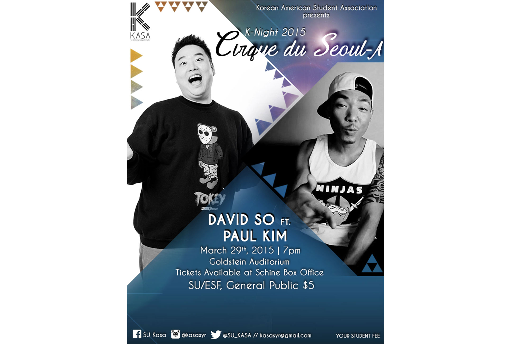
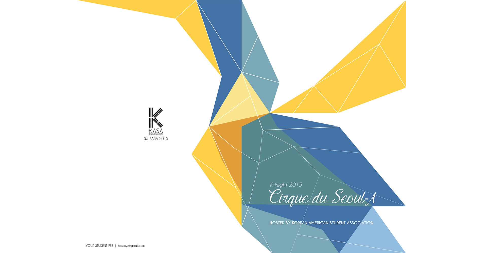
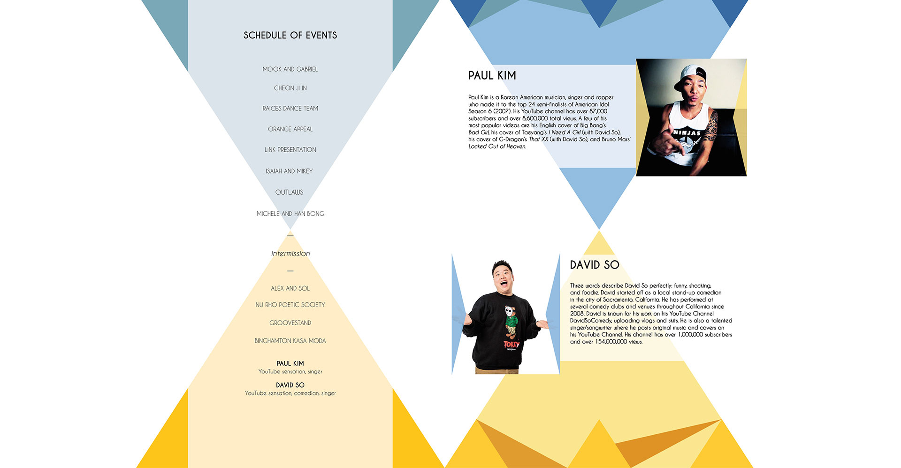
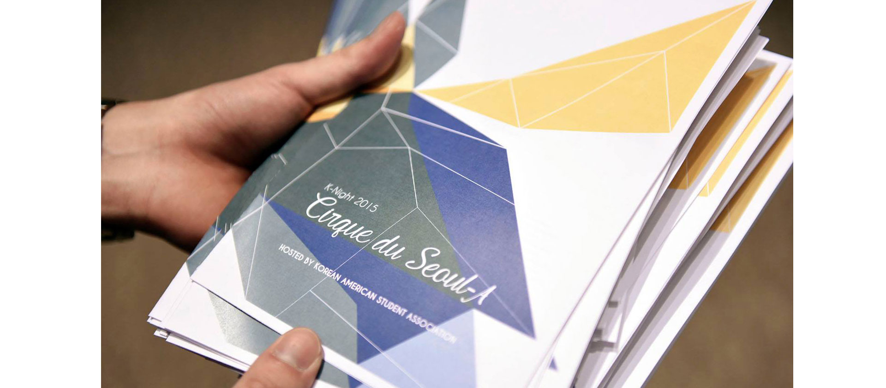
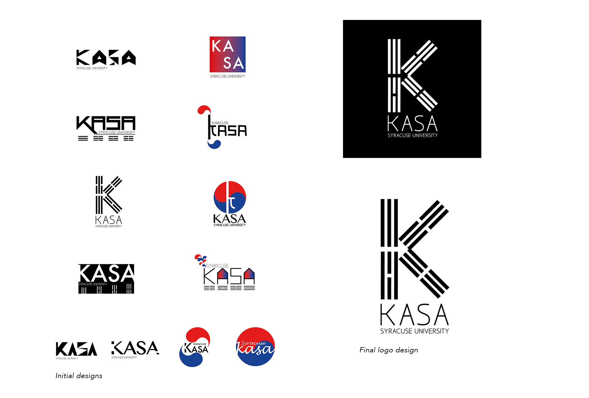
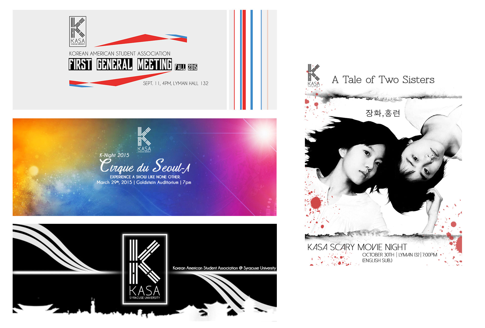
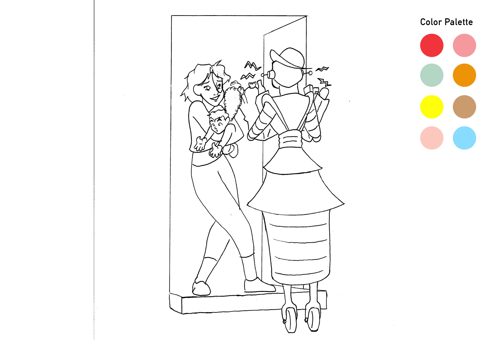
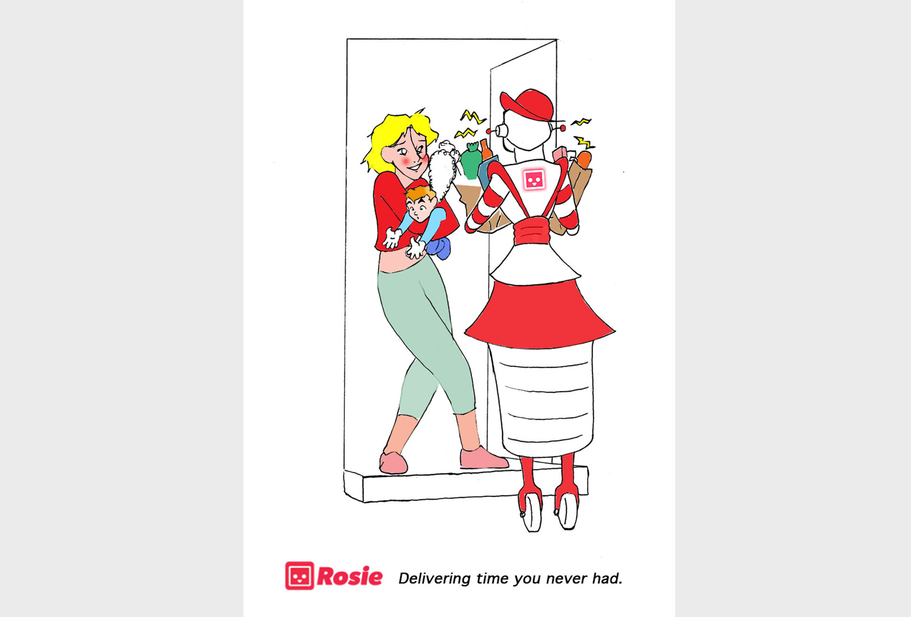

Posters & Branding
KOREAN AMERICAN STUDENT ASSOCIATION
Korean American Student Association (KASA) is a student organization that encourages and promotes interest in Korean history, culture, as well as other factors that influence the Korean and Korean American experience at Syracuse University. KASA provides opportunities for students who are interested in the Korean culture to explore and voice common concerns and interests through culturally stimulating events.
As design chair for KASA, I am responsible for creating visually stimulating graphics and promotional materials for the events. I designed logos, printed/digital media, leaflets, apparel and more.
I always aim to create simple yet modern designs for KASA to suit the fashionable, hip and fun lifestyle of Koreans and Koreans Americans.
Poster Design
Each year we hold our biggest cultural event called "K-Night" where we invite SU student performers as well as Korean American YouTube celebrities to perform. Last year we were honored to have David So and Paul Kim come perform for us. This is the poster I designed to publicize the event and it got featured on both David So's and Paul Kim's instagrams too!

Print Design
Here is the program booklet I designed for K-Night with a list of performances and information about the artists. The theme for this year's K-Night is "Cirque du Seoul-A". The theme got reflected in the vibrant colors and design that express the thrilling sensation and liveliness of the event.



Event program (bi-fold)
Logo & Branding
I designed the KASA logo based off of the Korean flag by incorporating the four trigrams which represent the principle of movement and harmony.
I first came up with a couple of initial designs for the logo and these got refined and narrowed down to one final design. My emphasis is on simplicity, stylishness and a tint of Korean culture. Some of these logos are also incorporated into KASA's apparel and other digital media.

Digital Media

ROSIE
Rosie is a startup founded by a group of Cornell graduates who decided to put an end to the long and tedious process of shopping for groceries. The idea came out of the desire to make a fast and easy online shopping experience. The goal of Rosie is to be the fastest, most convinient way to shop for groceries in the local community.
I was tasked to come up with a design/advertisement that captures the unique personality of the company and the benefits that it will bring to the community. The biggest design challenge was to communicate a clear connection between the customers and the brand.

One of Rosie's target market is single moms who don't have time to go grocery shopping since they have to take care of their young kids and it would be a burden for them to travel. My goal was to create an image that illustrates the great customer service that is at the core of Rosie's culture.
I started off with a sketch of a single mom with her child in her arms. The mom looks delighted as the Rosie's robot brings her her groceries.

Since the color red is dominant in Rosie's branding, I decided to emphasize the redness in the poster and use a white background to create a clean and simple look. In addition, I came up with the slogan "Delivering time you never had" to emphasize Rosie's mission of being the fastest and most convenient way to shop.